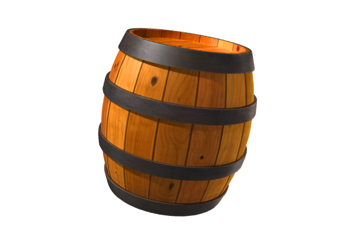
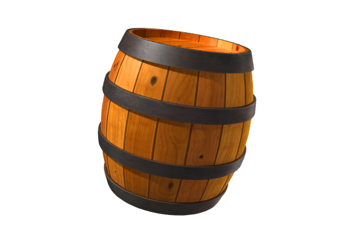

Le Macaque Rhésus
Le Macaque rhésus, aussi appelé Singe rhésus ou Bandar, est l'une des espèces de singes les plus connues de l'Ancien monde notamment à travers une sexualité débordante permettant une large reproduction,
Le Mandrill
Le Mandrill (Mandrillus sphinx) est un primate de la famille des cercopithécidés, apparenté au babouin et très proche du drill. Victime de la déforestation et du braconnage, le mandrill est menacé d'extinction.
Le Sapajou Capucin
Le Sapajou capucin (Cebus capucinus) est un singe du Nouveau Monde de la famille des cébidés.
Dusky Leaf
En raison de son aspect intéressant, l’apparence et la taille adorable, la feuille sombre singe ou spectacled Langur est classé parmi les animaux les plus mignons dans le monde
 
